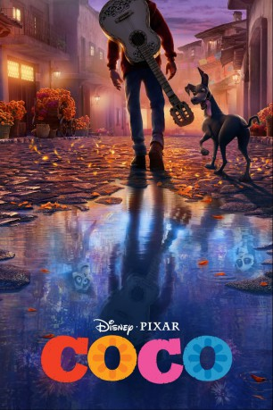

Alternativ: Coco
Auszeichnungen: 2 Oscars gewonnen 1 GoldenGlobes gewonnen 1 BAFTA-Awards gewonnen
 
 IMDB-Wertung: 8.4 / 10
IMDB-Wertung: 8.4 / 10  IMDB-TOP-Platzierung: 72
IMDB-TOP-Platzierung: 72  Metascore:
Metascore: 
Migue ist zwölf Jahre alt und ein großer Fan von Musik – aber leider hasst seine Schusterfamilie alles, was mit Tönen und Instrumenten zu tun hat. Miguels Ururgroßvater verließ damals seine Frau und Tochter, um Musiker zu werden, seitdem fühlen sich die Riveras durch Musik verflucht. Doch Familie hin oder her – Miguel will seinem Idol, dem Sänger Ernesto de la Cruz, trotzdem nacheifern. Aus Versehen kommt er dabei ins Reich der Toten und betritt dadurch einen wunderschönen Ort, an dem er die Seelen seiner toten Verwandten trifft. Miguels Ururgroßmutter Imelda ist darunter, und das nette Schwindler-Skelett Hector. Zusammen suchen Skelett und Junge im Totenreich nach de la Cruz, wobei allerdings die Zeit drängt: Zu lange darf Miguel nicht in der Unterwelt bleiben…
Jahr: 2017
Dauer: 105 Minuten
FSK: 0
Land: USA Studio: Walt Disney Studios Motion PicturesTonspuren: DTS - ,
Untertitel:
Auflösung: 1080p (1920x1080) Größe: 13414 MB
Genre: Musik, Komödie, Abenteuer, Fantasy, Animation/Trick, Familie, Mystery
Regisseur: Lee Unkrich, Adrian Molina
Drehbuch: Lee Unkrich
Soundtrack: Michael Giacchino
Darsteller:
 Gael García Bernal als Héctor
Gael García Bernal als Héctor Benjamin Bratt als Ernesto de la Cruz
Benjamin Bratt als Ernesto de la Cruz Alanna Ubach als Mamá Imelda
Alanna Ubach als Mamá Imelda Jaime Camil als Papá
Jaime Camil als Papá Alfonso Arau als Papá Julio
Alfonso Arau als Papá Julio Gabriel Iglesias als Clerk
Gabriel Iglesias als Clerk Lombardo Boyar als Plaza Mariachi / Gustavo
Lombardo Boyar als Plaza Mariachi / Gustavo Edward James Olmos als Chicharrón
Edward James Olmos als Chicharrón Cheech Marin als Corrections Officer
Cheech Marin als Corrections Officer John Ratzenberger als Juan Ortodoncia
John Ratzenberger als Juan OrtodonciaDatei: X:\Kinder Disney HD\2000-2018\Coco - Lebendiger als das Leben (2017, FSK0, 1920x1080) 3D.mkv seit 02.03.2018
Festplatte: Kinder-Filme+Trick
 Es gibt insgesamt 45 Filme in der Gruppe 'Kinder Disney HD\2000-2018'
Es gibt insgesamt 45 Filme in der Gruppe 'Kinder Disney HD\2000-2018'